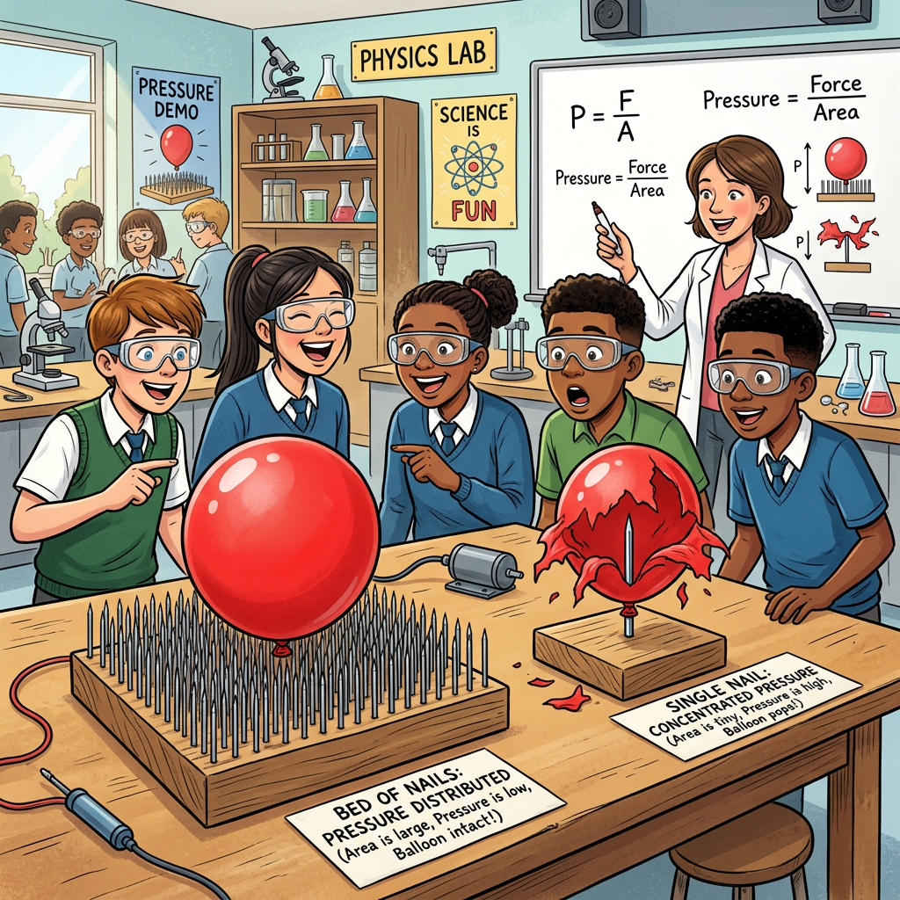

压 强
从图钉尖到深海 · 固体压强与液体压强

🎯 引导 Engage
🤔 雪地上的两个人
[And] 同样是 60 kg 的人站在雪地上——穿普通鞋的人陷了下去，穿雪橇的人却能在雪面上滑行。
[But] 两个人的重力一样大，对雪面的压力也一样大，为什么效果天差地别？
[Therefore] 光看"力有多大"不够，还要看力集中在多大面积上。物理学用压强 p = F/S 来描述。
📌 核心问题驱动
- 滑雪板为什么又宽又长？
- 切菜时刀磨得越薄越好切？
- 潜水时耳朵为什么会痛？
- 水坝底部为什么比顶部厚？
- 茶壶嘴和壶身的水面为什么总是一样高？
🧪 三大知识模块
| 模块 | 核心公式 |
|---|---|
| 固体压强 | p = F / S |
| 液体压强 | p = ρgh |
| 连通器原理 | 同种液体静止时液面等高 |
📋 教学目标 Objectives
知识与技能
能用 p=F/S 计算固体压强，用 p=ρgh 计算液体压强，能解释连通器原理
过程与方法
经历探究压力效果与哪些因素有关的实验过程，学会控制变量法
情感与价值
体会压强知识在工程建筑、日常生活中的广泛应用
📋 前测：你已经知道什么？
1. 关于力的作用效果，正确的是（）
2. 一本书平放在桌面上，书对桌面的压力等于（）
3. 密度公式 ρ=m/V，铁块切成两半，每一半的密度（）
📖 模块一：固体压强 p = F/S
🤔 为什么要学压强？
[And] 你知道力可以让物体形变——按压气球它会凹陷。
[But] 同样 10 N 的力，用手掌按和用针尖戳效果完全不同！
[Therefore] 物理学用压强 p = F/S描述压力的"集中程度"：压力越大、面积越小，压强越大。
💡 核心知识
压力：垂直作用在物体表面上的力。水平面上 F压=G；斜面上 F压<G。
p = F / S
p 的单位是帕斯卡（Pa），1 Pa = 1 N/m²。一张报纸平放在桌上的压强约 0.5 Pa。
| 场景 | 压强值 | 特点 |
|---|---|---|
| 人站立对地面 | 约 15 000 Pa | 面积 ≈ 400 cm² |
| 图钉尖端压木板 | 约 5×10⁷ Pa | 尖端面积极小 |
| 铁轨下铺枕木 | 减小压强 | 增大受力面积 |
| 刀刃磨得很薄 | 增大压强 | 减小受力面积 |
⚠️ 辨析：压力 ≠ 重力
| 比较项 | 压力 F | 重力 G |
|---|---|---|
| 定义 | 垂直作用于物体表面的力 | 地球对物体的吸引力 |
| 方向 | 垂直于受力面（方向随面变） | 竖直向下（始终不变） |
| 施力物体 | 与表面接触的物体 | 地球 |
| 大小关系 | 水平面 F=G；斜面 F<G | G = mg |
| 典型错误 | 在斜面上把压力当成重力来计算 | |
🔍 深层理解：受力面积 ≠ 物体总面积
S 必须是两个物体实际接触的面积。砖平放 S=24×12=288 cm²；竖放 S=24×5=120 cm²——同一块砖，压强不同！
🌍 生活中的压强——增大与减小
🔺 增大压强（减小面积/增大压力）
图钉
尖端面积极小 → 轻按就钉入木板
菜刀磨薄
刀刃面积越小 → 切菜越省力
啄木鸟喙
尖锐的喙 → 轻松啄穿树皮找虫
🔻 减小压强（增大面积/减小压力）
宽书包带
增大肩部受力面积 → 背着不勒
铁轨下铺枕木
增大对地面接触面积 → 火车不陷
滑雪板又宽又长
增大对雪面面积 → 人不下陷

🧪 实验一：冰面救人——站着 vs 趴着
有人掉进冰窟窿，你去救人应该站着走还是趴着爬？拖动滑块切换姿势。
站立：S≈0.05 m²，p≈12000 Pa — ⚠️ 冰面危险
✏️ 即时检测
砖重 24 N，长 24cm 宽 12cm 高 5cm。平放时对地面压强约为（）
📖 模块二：液体压强 p = ρgh
🤔 液体也有压强？
[And] 固体放在桌面上，对桌面产生压强。
[But] 潜水时耳朵为什么会痛？水坝底部为什么比顶部厚得多？水明明是"软"的啊。
[Therefore] 液体有重力且能流动，对容器底部和侧壁都产生压强：p = ρgh。
💡 核心知识
液体压强四大特点（探究实验结论）：
- 液体对容器底部和侧壁都有压强
- 同种液体、同一深度，各方向压强相等
- 深度越大，压强越大
- 同一深度，液体密度越大，压强越大
p = ρgh
ρ — 液体密度(kg/m³) g ≈ 9.8 N/kg（常取10） h — 液面到该点的竖直深度(m)
⚠️ 高频易错：深度 ≠ 高度
h 从液面向下量到该点的竖直距离，不是从容器底部向上量。倾斜容器也从自由液面竖直向下算。
🐟 深海鱼的秘密——液体压强的极致体现
海洋不同深度的鱼类形态截然不同，正是液体压强随深度增大的证据：
| 海洋层 | 深度范围 | 代表鱼类 | 形态特征 |
|---|---|---|---|
| ☀️ 阳光带 | 0-200m | 小丑鱼、金枪鱼 | 体型侧扁、色彩鲜艳、游速快 |
| 🌅 暮光带 | 200-1000m | 灯笼鱼、翻车鱼 | 腹部发光器、大眼睛、银色体 |
| 🌑 午夜带 | 1000-4000m | 鮟鱇鱼、蝰鱼 | 头顶发光诱饵、巨口尖牙、身体松软 |
| 🕳️ 深渊带 | 4000-6000m | 三脚架鱼、无脸鱼 | 底栖、鳍条如支架、眼退化 |
| ⬇️ 超深渊 | 6000-11000m | 马里亚纳狮子鱼 | 凝胶状、半透明、无鳞、粉红色 |
💡 马里亚纳海沟10000m处，水压约1×10⁸ Pa —— 每平方厘米上压着1吨重物！
🧪 实验二：深海压强探测器
改变探头深度和液体种类，观察压强变化
p = 9800 Pa
✏️ 即时检测
游泳池深 2m，水面下 1.5m 处水的压强是（g 取 10 N/kg）
📖 模块三：连通器原理
🤔 茶壶的秘密
[And] 你知道液体压强和深度有关，深度越大压强越大。
[But] 茶壶壶嘴和壶身的水面为什么总是一样高？
[Therefore] 这就是连通器原理：底部相通的容器，装同种液体且静止时，各部分液面总是相平的。
💡 核心知识
连通器：上端开口、底部连通的容器。
原理：装同种液体且液体静止时，各容器液面等高。
📐 为什么液面等高？
假设 A 管液面高于 B 管 → 底部连通处 A 侧深度大 → A 侧压强大 → 液体从 A 流向 B → 直到两边深度相同 → 压强相等 → 液面等高。
🌍 连通器在生活中的应用
茶壶
壶嘴与壶身底部相通，水面始终等高。壶嘴高度决定最大装水量。
船闸
三峡船闸利用连通器原理调节水位，让轮船"爬楼梯"过大坝。
水塔供水
水塔与居民水管构成连通器，水塔越高，用户端水压越大。
液面计
锅炉液面计与锅炉底部连通，看液面计就知道锅炉水位。
🧪 实验三：连通器演示
调节左管水量，观察液面如何自动平衡。改变右管形状，验证液面等高。
液面等高 ✓ — 连通器原理成立
✏️ 即时检测
连通器 A 管粗 B 管细，装入同种液体静止后，A、B 液面高度关系是（）
🎯 分级练习（脚手架策略）
Level 1 基础填空（有引导）
质量 5 kg 的物体放在面积 0.01 m² 的桌面上（g 取 10）
① G = mg = 5×10 = N
② 水平面上 F = G = N
③ p = F/S = 50/0.01 = Pa
Level 2 液体压强计算（给提示）
水池深 3m，求水面下 2m 处的压强（ρ水=1000 kg/m³，g 取 10）
💡 h 是液面到该点的竖直深度，不是水池总深度。
h = m
p = ρgh = 1000 × 10 × = Pa
Level 3 迁移挑战
设计题：某水库大坝高 50m，最大蓄水深度 45m。
① 坝底受到水的压强是多少？（ρ=1000 kg/m³，g取10）
② 坝底面积 0.5 m² 的闸门受多大水压力？
③ 为什么大坝做成上窄下宽的形状？
📊 后测：学会了吗？
📝 课程总结
🔑 核心公式速查
| 概念 | 公式 | 注意点 |
|---|---|---|
| 固体压强 | p = F/S | S 是受力面积 |
| 液体压强 | p = ρgh | h 从液面向下量 |
| 连通器 | 液面等高 | 同种液体·静止 |
🧠 思维导图
压强本质 = 力的"集中程度"
固体：减小S增大p（刀刃），增大S减小p（雪橇）
液体：p只与ρ和h有关，与容器形状无关
连通器：液面等高 ← 底部连通处压强相等
📚 延伸学习
- 下一课：大气压强——马德堡半球与托里拆利实验
- 高中：帕斯卡定律与液压机
- 工程：三峡大坝的压强计算
- 生活：高压锅、血压计原理
- 前沿：深海探测器"蛟龙号"耐压设计